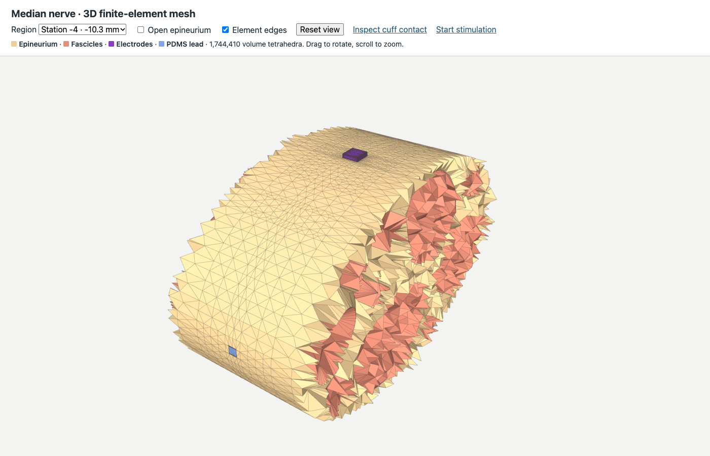
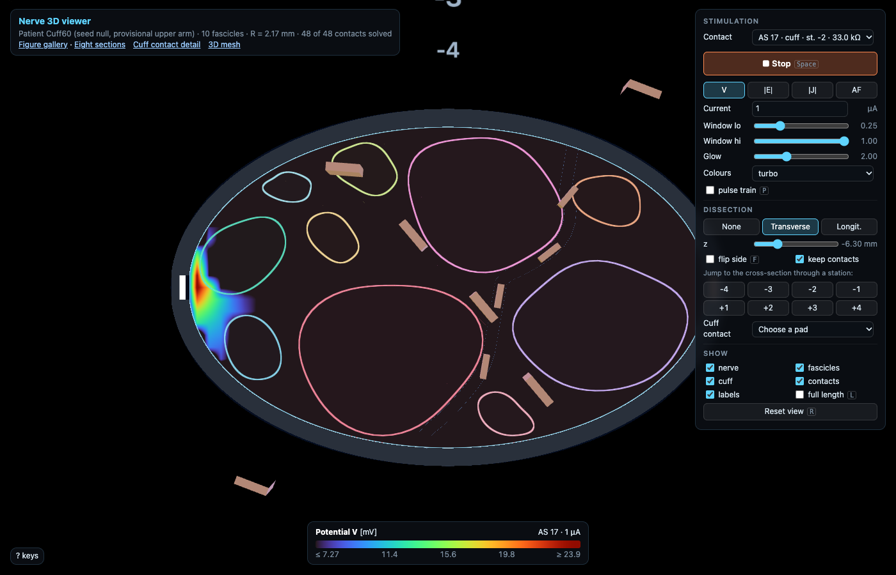

cuff-shank-3d · report of 22 Nov 2026start_nerve.m: Run regenerates everything, start_nerve("open") reopens the gallery, the mesh and the stimulation viewer.Can an intraneural electrode with 8 stations (4 internal pads and 2 cuff pads each, 48 active sites in total) stimulate the fascicles of the median nerve at mid-arm? The model is a quasi-static volume conductor solved by the finite-element method: a current leaves one pad and flows through the anisotropic endoneurium, the thin perineurium (potential jump), the epineurium and the surrounding muscle to a grounded outer boundary. The potential V satisfies div(σ∇V) = 0. The solution is linear, so results scale with the injected current (the stored fields are for 1 µA).
The pipeline has five steps: (1) anatomy, routed leads and figures; (2) connected cross-sections along 60 mm, tetrahedral mesh (Gmsh), assembly and solution in MATLAB for all 48 pads; (3) mesh-convergence study; (4) random irregular fascicles and a Monte Carlo of lead insertions (scenario study); (5) offline browser pages: figure gallery, rotatable mesh and stimulation viewer.
| Quantity | Value used | Status | Source / note |
|---|---|---|---|
| Nerve area, mid-upper arm | 9.20 ± 1.73 mm² | MEASURED | Pušnik et al. 2025, Table 1 (histological sections, 14 samples, 7 donors). Ultrasound pooled value 8.81 mm² (Ng et al. 2022) agrees in magnitude. |
| Nerve roundness | 0.62 ± 0.16 | MEASURED | Pušnik 2025, Table 1 (histology). An older team note quoted 0.77/0.73; the literature pack marks that as corrected. |
| Nerve semi-axes | 2.17 × 1.35 mm (ellipse) | DERIVED | From area and roundness; the area of the ellipse stays 9.20 mm². |
| Number of fascicles | 10 (10.07 ± 2.87) | MEASURED | Pušnik 2025, Table 1. |
| Total fascicle area / largest fascicle | 5.01 mm² / 1.49 mm² | MEASURED | Pušnik 2025, Table 1 (aggregate constraints only). |
| Positions and individual areas of the other nine fascicles; circular shape of each fascicle | synthetic layout | ASSUMED | No individual maps exist. The layout was selected so that the eight insertions are geometrically feasible. It must not be used to estimate a puncture probability. |
| Fascicle outlines | random smooth irregular shapes, roundness 0.70 ± 0.07 | ASSUMED | Same centres and areas as the circular layout; roundness statistics from histology (Pušnik 2025: 0.68 ± 0.08, MEASURED). Used by figures, mesh, solver and viewer; after the lead insertion some fascicles are displaced (fade-out over 0.4 mm along z, assumed). |
| Perineurium thickness | 14 µm, thin layer | ASSUMED | Consistent with 13.8 µm measured on canine fascicles (Horn 2023); not human data. |
| Quantity | Value used | Status | Source / note |
|---|---|---|---|
| Active sites | 48 = 8 stations × (4 internal + 2 cuff); z = ±4.3, ±6.3, ±8.3, ±10.3 mm | MEASURED | Layout file supplied by the tutor (sites.mat). |
| Pad face | 0.2 × 0.2 mm = 0.040 mm² | MEASURED | sites.mat; 0.040 mm² of interface verified in the mesh for each of the 16 cuff pads. |
| Pad thickness | 50 µm | ASSUMED | Course slides; sites.mat lists 5 µm. Literature range 0.3 to 125 µm. |
| Cuff pad pose | flat face tangent to the ellipse at its azimuth, advancing along the local normal | DERIVED | The supplied angle identifies a point on the oval. Corrected in this version (see section 3). |
| Extra closure per cuff pad | 3 µm beyond full seating | ASSUMED | Adjustable. Resulting centre indentations: 4.43 µm at AS5 (top of the oval) and 8.99 µm at AS17 (end of the major axis). |
| Tissue stiffness (Ogden 1 term) | μ = 12.9 ± 4.8 kPa, α = 6.5 ± 4.9 | MEASURED | Main et al. 2011: 10 cadaveric median nerves at the wrist, convex 10 mm platens, up to 40 % compression. It does not calibrate this device (flat pads, mid-arm), and it is not used by any calculation: the cuff indentation is purely geometric. The tutor accepted that the nerve area is not conserved under the cuff (variation below 1 %), to be declared as an assumption. |
| Lead material and tip | PDMS, tip 100 µm (taken as a diameter); inserted by the clinician with forceps from one side and anchored at the opposite end, not tensioned | GIVEN | Tutor, 23 Nov. PDMS tensile modulus about 2 MPa (1.3 to 3 MPa, Sylgard 184 10:1, arXiv:2404.16960). In the electrical model PDMS is an insulator (numerical stand-in 10−7 S/m). The tutor said the one-sided emission of the pads need not be modelled for now, so the pads conduct from all faces. |
| PDMS lead body and oval sleeve | lead cross-section 0.10 × 0.10 mm; sleeve 0.15 mm thick, oval, 50 mm long | ASSUMED | The lead width equals the tip diameter. The sleeve rolls on the nerve and is slightly thicker than the lead; its length is the cuff length assumed by the group. Muscle surrounds the sleeve. |
| Lead trajectories | one random insertion per station, from the entry wall to the opposite wall | ASSUMED | Path from the insertion algorithm (section 5b); forces and angles are not measured. |
| Tissue | Used (S/m) | ASCENT / Pelot set (S/m) | Stefano 2023 (S/m) |
|---|---|---|---|
| Endoneurium, transverse / longitudinal | 0.0826 / 0.571 | 0.167 / 0.571 | 0.00826 / 0.0571 |
| Perineurium | 0.00088 | 0.00087 | 0.00088 |
| Epineurium | 0.0826 | 0.159 | 0.0826 |
| Muscle, transverse / longitudinal | 0.13 / 0.56 | 0.086 / 0.35 | – |
| Item | State |
|---|---|
| Lead trajectories | Replaced after the tutor's information (23 Nov): each lead enters on one side and is anchored at the opposite wall; the path in between comes from the insertion algorithm. The earlier approved routes remain available with p.geometry.mode = "legacy". |
| 16 cuff pads tangent to the ellipse, advancing along the local normal | Kept (correction of the earlier radial placement). Used in figures, mesh and viewer. |
| Mesh from connected sections along 60 mm | Kept and extended: about 1.75 million tetrahedra (it was 548,000), with irregular fascicles, PDMS lead bodies, an oval PDMS sleeve and 5 µm elements on all pad edges. 48 fields, four maps per pad. The count varies by about 0.1 % between runs because Gmsh is not deterministic. |
| Pad edges | New: refined mesh on all pad edges. The access resistance of a pad rose by 2 to 5 % and is converged with respect to the edge size (section 5). |
| Irregular random fascicles and lead insertion | New, in production: figures, mesh, solver and viewer read the same scenario (section 5b). |
| PDMS in the electrical model | New: lead bodies and an oval sleeve around the nerve replace the circular insulating void. |
| Force-versus-closure plot with end dots | Removed, together with its table: agreed to be incorrect for this device. |
| Cuff contact figure | Changed: the bottom-right side view (flat, uninformative) was replaced by a transverse cut at a second oval zone, chosen automatically as the pad with the largest indentation. |
| Mesh convergence study | New, part of Run (section 5). |
| Opening the pages | Fixed: always opens in Chrome (the viewer needs WebGL2 and local scripts); the viewer now states why stimulation is unavailable if the stored fields do not match the geometry. |
| Output folder | Cleaned: results/ holds only current outputs; older material was moved to archivio_risultati_vecchi/. |
| Viewer colours | Unchanged with respect to the original viewer (same palette and colour code). |
| Original work of the colleague (reference patient UA01, 70 mm circular model, 2D solver) | Preserved; it remains in the repository history and is merged into this branch. |




The access resistance R (the voltage needed to inject 1 µA) kept increasing when the whole mesh was refined. Current crowds on the edges and corners of a flat pad; a coarse mesh smooths this crowding and the pad behaves as if it were wider, so R is underestimated. This was tested (on the previous geometry with circular fascicles) by refining only the elements on the pad edges:
| Edge element size | Tetrahedra | R AS1 (kΩ) | R AS5 | R AS17 |
|---|---|---|---|---|
| none (old production) | 548,832 | 16.54 | 31.46 | 30.62 |
| 10 µm | 556,982 | 16.89 | 32.94 | 32.05 |
| 5 µm | 563,596 | 16.94 | 33.02 | 31.90 |
| 2.5 µm | 569,263 | 16.93 | 33.01 | 31.95 |
R stops changing below about 5 µm (changes under 0.5 %), so the edge explanation is supported. The mesh without edge refinement underestimated R by about 2 % (AS1), 5 % (AS5) and 4 % (AS17). Production now uses 5 µm on all 48 pads.

With the edge size fixed at 5 µm, the current geometry (irregular fascicles, PDMS) was meshed four times by shrinking all other element sizes by 1.4 per level (0.97, 1.25, 1.74 and 2.83 million tetrahedra; the third is production). Pads AS1 (internal), AS5 and AS17 (cuff) inject 1 µA.
| Pad | R (kΩ), 4 meshes coarse to fine | Change in last step |
|---|---|---|
| AS1 (internal) | 16.6 → 17.2 → 17.7 → 18.2 | 2.5 % |
| AS5 (cuff) | 30.7 → 31.8 → 32.6 → 33.4 | 2.3 % |
| AS17 (cuff) | 30.5 → 31.9 → 32.9 → 33.8 | 2.5 % |


The PDMS lead bodies and the oval sleeve are modelled as insulators (unfilled PDMS has a bulk conductivity of the order of 10−12 S/m; conductive PDMS needs fillers). Because this choice, the sleeve length and the return boundary are assumptions, they were tested on the production geometry (before the final change of the lead ends, which does not alter the conclusions) for one internal pad (AS1) and two cuff pads (AS5, AS17):
| Case | R AS1 (kΩ) | R AS5 | R AS17 | Current to end planes | Current to muscle surface |
|---|---|---|---|---|---|
| PDMS insulator (baseline), sleeve 50 mm | 18.0 | 32.7 | 33.1 | 69 % | 31 % |
| PDMS conductive 10−3 S/m | 15.4 | 28.7 | 28.2 | 10 % | 90 % |
| PDMS conductive 10−1 S/m | 13.1 | 7.7 | 7.4 | 4 % | 96 % |
| Sleeve 36 mm | 16.7 | 31.7 | 31.9 | 24 % | 76 % |
| Sleeve 22 mm | 15.2 | 29.5 | 30.7 | 7 % | 93 % |
| Nerve end planes insulated (sleeve 50 mm) | 18.0 | 32.8 | 33.1 | 10 % | 90 % |

The tutor said that fascicles are neither circles nor ellipses, that the leads are PDMS (tip 100 µm), and described how they are inserted: pushed by forceps, entering from one side and anchored at the opposite end without tension; the lead may deviate around fascicles, push them aside or, for very large fascicles, pass through them. This is implemented as one reproducible scenario read by figures, mesh, solver and viewer; the algorithms are documented step by step in docs/algorithms_and_plan.md.


The model runs on a patient: nerve section and fascicle outlines (and, optionally, what each fascicle carries). A virtual and a patient-specific patient have the same structure, so a real section can be added by dropping a JSON file (data/patients/personal/, guide in docs/patient_data.md) without touching the code. The reference virtual patient V001 reproduces exactly the geometry used so far.
docs/function_map_evidence.md).This section explains, in the order in which they are executed, the algorithms added in this version. For each one it states what is measured, derived or assumed. File names refer to src/.
cuffContactPlane, cuffDeformedRadius)The cuff is rigid on the pads side and the nerve is compressed under it. For every pad row, the anchor is the point of the nerve ellipse at the angle of the pad; tangent and normal come from the gradient of the ellipse. A plane is placed under both lateral edges of the pad, with 3 µm of extra closure (assumed), so that the whole pad face touches the epineurium. The indentation is 4.43 µm at station AS5 and 8.99 µm at AS17. The nerve radius is then reduced to that plane with a smooth blend (smoothstep, 0.12 mm laterally and 0.40 mm along z), so that no step appears in the mesh. The deformation is purely geometric: the area is not conserved (the tutor said it is not needed) and the hyperelastic parameters (Ogden μ, α) are not used by any calculation. After meshing, checkCuffMeshContact verifies that each active pad shares exactly 0.0400 mm² with the epineurium surface.
assembleConductionP1, solvePersonalPads)The potential obeys div(σ grad V) = 0 in the quasi-static regime with anisotropic conductivity σ = diag(σT, σT, σL). It is solved with linear tetrahedra (own assembly), the perineurium as a thin resistive sheet on duplicated interface nodes, and the pad as a high-conductivity body (103 S/m) carrying a uniform volume source; idle pads are insulating (10−7 S/m). The outer muscle cylinder (radius 3R) and the nerve end planes are grounded. The 48 problems (1 µA each; the problem is linear) are solved by preconditioned conjugate gradients (incomplete Cholesky; relative residual below 10−8). The access resistance is R = (mean pad potential)/I. Current crowds at the edges of a pad, so the value of R depends on the element size there: hEdge = 5 µm on the pad edges makes R converge with respect to the edge size (Section 5.1). The remaining drift, about 2–2.5 % per global refinement, comes from the rest of the mesh and is smaller than the effect of model choices (Section 5.3). The balance of currents is checked (error about 10−8 %).
randomFascicleShapes)Each fascicle keeps the centre and the area of the circular layout. Its outline is an ellipse of the target area (roundness drawn from N(0.68, 0.08), Pušnik 2025) deformed by random radial Fourier harmonics (amplitude 0.07). Candidates are rejected if they overlap another fascicle or leave the nerve; if no valid shape is found, the shape is relaxed towards a rounder one, and finally a circle is used. Seeds are fixed, so every run gives the same shapes. Only the roundness statistic is measured; the shapes themselves are assumed.
simulateInsertion)The lead is a PDMS filament with a tip of 100 µm diameter, pushed by forceps from the entry wall and anchored without tension at the opposite wall. In 2D, per station, the tip advances in steps of 10 µm along a random direction (entry angle within ±10°, entry offset SD 0.15 mm). When the tip touches a fascicle (outline plus perineurium) the algorithm computes the angle γ between the motion and the surface normal and the normal force (median hand force 20 mN, log-normal):
Both ends of the lead stop on the nerve wall (the inner face of the sleeve): the centreline reaches the wall and the PDMS band is clipped flush with it, so the lead does not float inside the nerve nor protrude. The four pads are placed along the arc length at their fixed distances from the anchored end. A trial is rejected unless the lead reaches the far wall, all pads lie inside the nerve and do not overlap; trials are redrawn with fixed seeds. Forces and stiffness are assumed; the outcome depends strongly on the ratio between hand force and puncture force (Figure 14), so frequencies are indicative.
scenarioFascicles)The insertion is 2D, so a rule is needed along z. The shift of a displaced fascicle is multiplied by a triangular weight w = max(0, 1 − |z − zs|/0.4 mm): it is full at the station plane and goes linearly to zero 0.4 mm before and after, 0.8 mm in total per station. Stations are 2 mm apart (z = ±4.3, 6.3, 8.3, 10.3 mm), so the displacements are independent and the fascicles are back in their original position, and straight, between two stations. This length is an assumption (the lead is only 0.10 mm thick along z; the real extent is unknown). The mesh uses exactly the same outlines: displaced fascicles are lofted through the levels zs−0.4, zs, zs+0.4 mm; the others are straight prisms. Fascicles do not move “by themselves” in the mesh: the mesh is built once from the scenario geometry.
meshPersonalDevice)PDMS appears twice: as the lead band (0.10 × 0.10 mm, clipped to the nerve) and as an oval sleeve (0.15 mm thick, 50 mm long) around the nerve. Both are modelled as insulators (σ = 10−7 S/m, a stand-in for unfilled PDMS; the value is a parameter). Effect: the current leaves the pad through the tissue and cannot flow along the lead or the sleeve; in the baseline 69 % of the current reaches the grounded end planes and 31 % the muscle laterally. The sensitivity to the PDMS conductivity and to the sleeve length is larger than the mesh error (Section 5.3): a conductive filled PDMS would change R dramatically.
mesh_personal.py, Gmsh/OpenCASCADE)MATLAB writes the geometry (outlines at each level); Python/Gmsh builds ruled lofts, fragments all volumes with priorities (so that interfaces are shared) and applies size fields: pads 30 µm (5 µm on edges), endoneurium 100 µm, nerve 150 µm, coarse 500 µm, muscle 1.2 mm. Convergence is studied by uniformly scaling the sizes and comparing R; the edge test varies only the pad-edge size.
Three PDFs and a screenshot describe three scenarios for the functional composition of fascicles: (A) forearm rule, (B) MR-neurography position of the anterior interosseous group, (C) random patches with 12–14 % motor fibres. As shown in Section 5c, no published map allows assigning mid-arm fascicles to muscles, so scenario A/B cannot be applied as data and random patches were rejected: the functions remain unassigned. The code can accept them when measured.
Measured routes (for a real patient): (1) stimulate each electrode after implantation and record the evoked EMG/force (Delgado-Martínez 2016); (2) trace the branches proximally on serial histological sections (Jabaley); (3) fascicle imaging by MR neurography, which gives only the position of some groups; (4) ChAT immunohistochemistry, which separates motor from sensory fibres but not muscles. For a generic patient only probabilistic hypotheses can be built (Monte Carlo over scenarios), not a prediction.
A mid-arm section with scale, orientation, contours and anatomical level, and any oriented sections or fibre/function assignments over the 6 cm.
NERVE_GMSH_PYTHON if not in the default location), Google Chrome.start_nerve runs the five steps; start_nerve("open"), ("viewer"), ("mesh"), ("figures"), ("convergence") and ("insertion") reopen or repeat single parts.config/quicklook3DParams.m (anatomy, lead mechanics, closure), config/pw6_3d_params.m (materials, mesh sizes including hEdge_m, solver) and config/insertionParams.m (insertion parameters, each tagged GIVEN, LIT or ASSUMED).